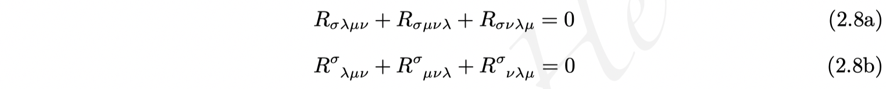
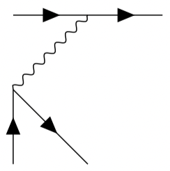
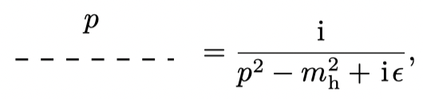

LaTeX Math Input
最后更新：2022.03.25, 11:47
Multi-Line Euqation
公式的对齐
对齐符号 & 一般放在等号的前面, 但有时会有一两行公式需要在等号后面对齐, 此时可采用 \phantom 指令, 不过需要加上 \mathrel 以获得正确的间距. 如
1 | |
将得到如下效果
Sub-label
Environment subequations can be used outside the multi-lines environment such as align to get the sub-label looks like (2.8a). For example
1 | |
the output is looks like

Feynman Diagram
A build-in method for LaTeX is use package tikz-feynman. However, to got the correct rendering, one must use LuaTeX to compile [3] , otherwise will obtain a awful result like this

What’s more, JaxoDraw [4] is also a possible solution.
A more wise way to draw Feynman diagram is use the drawing software for vector picture. Mathcha [5] is a good tool, it can export pictures with tikz code rather than tike-feynman, so which provide a good support for complier like xelatex. It website version is free, so you can have a try and consider whether pay for off-line version later.
To use Feynman drawn by tikz, one need to understand how to insert tikz picture into math environment. In fact, one can insert environment tikzpictur into math environment like equation or align directly [6] . However, to ensure it can be compiled correctly, one would better to remove empty line in tikzpictur environment. By the way, one can use option baseline to control the relative hight of the picture. For example
1 | |
the result is like

Sometime a command \mathord{} might be used [6] , which “forces the argument to be treated in the ‘ordinary’ class.” [8]
Other
Standard
- 数学常数一般用正体, 如自然对数 $\mathrm{e}$, 微分符号 $\mathrm{d}$, 虚数单位 $\mathrm{i}$. 同时, 符号应与含义一一对应, 如电荷量 $e$ 与自然对数 $\mathrm{e}$ 同时出现时, 应使用不同的符号。也有认为 “表示变量的符号斜体，表示文本或文本缩写的符号用正体。” 的说法 [1] .
Special Command Introduce
\mathrel{}: typesets its parameter as though it were a mathematical relation for the purposes of spacing. Specially, if parameter is empty, $\mathrel{}$ makes an empty atom that gets relation spacing [2] .
Reference
本博客所有文章除特别声明外，均采用 CC BY-NC-SA 4.0 协议 ，转载请注明出处！